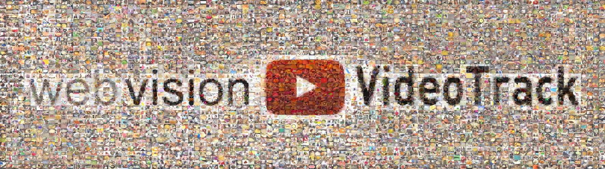

|
 Welcome to the WebVision Video Trackas part of theTHE 4TH WORKSHOP ONVISUAL UNDERSTANDING BY LEARNING FROM WEB DATA 2020June 14th - 19th, 2020Seattle, WAin conjunction with CVPR 2020
Collecting data for large-scale action classification is becomming more and more time consuming. This puts a natural limit to the size of current benchmarks and makes it unlikely to ever have ImageNet scale benchmarks in action recognition with millions of samples. Additionally, those datasets are usually based on a hand-crafted class vocabulary based on easy to search categories as authors need to cover many different scenarios and at the same time, identify unique distinguishable actions. But techniques developed and finetuned on such data do not naturally transfer to applications in the wild. To adress this problem, we want to move some steps away from the usual action classification and explore the problem of learning actions from real-live videos without human supervision. The webvision video track run as part of the Workshop on Visual Understanding by Learning from Web Data. This workshop aims at promoting the advance of learning state-of-the-art visual models from webly supervised data. We want to transfer this idea to the case of learning action representations from video subtitles without any human supervision. Two tracksWe will have two tracks for this challenge, one based on the original videos and one based on precomputed features only. Video Track: For the orginal video track, you are free to use the full videos or the pre-extracted video clips. Feature Track: For the feature track, you are only allowed to use the preextracted features from the 350k clips. We will provide a vanilla pytorch baseline for the feature track as well as evalaution scripts to reproduce intial results and to valiadate your systems. DataThe data for this challenge is based on the MiningYouTube dataset (working title is 'Weak YouTube', but some people found that this sounds too negative). Please find the homepage here: https://github.com/hildekuehne/Weak_YouTube_dataset . The dataset comprises ~ 20,000 YouTube videos that display explain various egg recipes, namely for fried egg, scrambled egg, pancake, omelet, and egg roll. For training, we provide the video indexes with the respective subtitles (downloaded in 2017/2018) as well as pre-extracted video clips with tentative labels as described in the paper. For the feature-track, we further provide pre-computed TSN features (https://github.com/yjxiong/temporal-segment-networks) based on the Kinetics pretrained model. We hope that working with pre-computed features will allow a faster development and testing especially of new ideas on the mining and/or concept learning side and at the same time allow for an easier reproducability of methods. The training data for all tracks is available under: https://github.com/hildekuehne/Weak_YouTube_dataset/tree/master/train The data additionally has a set of ~5000 videos with class labels and a human annotation if this class label is present in the video, which can be used for training or validation. The testing data (and validation data for the challenge) is available under: https://github.com/hildekuehne/Weak_YouTube_dataset/tree/master/test
General rules: You are allowed to use the yes/no validation data listed in the 'val_yes_no.txt' file (here: https://github.com/hildekuehne/Weak_YouTube_dataset/tree/master/train) for validation and/or training. It's only a few clips per class, so the assumption is that it will not get you all the way, but any new ideas are welcome. You are only allowed to use the orginal subititles or the generated labels from the baseline. Please do not! download new subtitles as they can change over time and we would not be able to compare your methods to others any more. You can use the test set of the original dataset as validation set. It is not allowed to include the data from the test set as additional training data!
Frequently Asked Questions
Can I crawl text data according to MiningYouTube concepts by myself, and use it as training data?
|